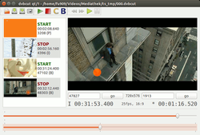

DVBcut
Dieser Artikel wurde für die folgenden Ubuntu-Versionen getestet:
Ubuntu 16.04 Xenial Xerus
Ubuntu 14.04 Trusty Tahr
Zum Verständnis dieses Artikels sind folgende Seiten hilfreich:
DVBcut  macht es möglich, MPEG2-Video-Transportströme (TS) frame-genau zu schneiden und als MPEG2-Programmstrom (PS) zu speichern. Diese Transportströme werden bei der Aufzeichnung von DVB mittels Satelliten-, Kabelreceivern und TV-Karten erzeugt. Weil dabei keine rechenintensive Umkodierung des gesamten Videos stattfindet, ist die Umwandlung relativ schnell durchgeführt. Aus diesen Videos kann unter Verwendung eines entsprechenden Autorenwerkzeugs eine Video-DVD erstellt werden.
macht es möglich, MPEG2-Video-Transportströme (TS) frame-genau zu schneiden und als MPEG2-Programmstrom (PS) zu speichern. Diese Transportströme werden bei der Aufzeichnung von DVB mittels Satelliten-, Kabelreceivern und TV-Karten erzeugt. Weil dabei keine rechenintensive Umkodierung des gesamten Videos stattfindet, ist die Umwandlung relativ schnell durchgeführt. Aus diesen Videos kann unter Verwendung eines entsprechenden Autorenwerkzeugs eine Video-DVD erstellt werden.
Für HDTV-Aufzeichnungen (MPEG4-Format) ist das Programm nicht geeignet.
Voraussetzung¶
Um Videos innerhalb der Anwendung wiedergeben zu können, wird zusätzlich der MPlayer benötigt.
Installation¶
Das Programm kann mittels des folgenden Pakets installiert [1] werden:
dvbcut (universe)
 mit apturl
mit apturl
Paketliste zum Kopieren:
sudo apt-get install dvbcut
sudo aptitude install dvbcut
Ist die Installation abgeschlossen, kann man die Anwendung durch den Befehl dvbcut starten [2] oder man legt sich manuell einen Menü-Eintrag dafür an [3].
Manuell¶
Möchte man DVBcut selbst aus dem Quellcode erstellen und installieren [4], müssen dazu folgende Pakete installiert sein:
libqt3-mt-dev
qt3-dev-tools
libao-dev
libmad0-dev
liba52-0.7.4-dev
libboost-dev
mit apturl
Paketliste zum Kopieren:
sudo apt-get install libqt3-mt-dev qt3-dev-tools libao-dev libmad0-dev liba52-0.7.4-dev libboost-dev
sudo aptitude install libqt3-mt-dev qt3-dev-tools libao-dev libmad0-dev liba52-0.7.4-dev libboost-dev
Der Quellcode wird dann von der Downloadseite heruntergeladen und entpackt [5] oder wie dort ebenfalls angegeben, direkt aus dem Subversion-Repository kopiert. Das entstandene Verzeichnis dvbcut wird zunächst umbenannt in dvbcut-VERSION,VERSION steht für die vom Autor angebotene, im Moment also 0.5.4 bzw. 0.6.1 (bei den aktuellen Quellen aus dem Repository, denn die Archive von der Webseite werden nicht mehr aktualisiert!). Das Umbenennen ist wichtig, damit später bei der Paketerstellung die korrekte Version erstellt wird. Danach wird das Programm kompiliert [4].
Das noch in der Readme-Datei angegebene Paket scons ist in den aktuellen Quellen aus dem SVN-Repository nicht mehr nötig, da alternativ dazu der klassische Weg über make angeboten wird . Um eine SVN-Version zu kompilieren, muss man deshalb zunächst ein makefile erstellen. Dies geschieht mit der Ausführung von
autoconf
Das nachfolgende
./configure
muss dabei mit der Option
--with-qt3-include=/usr/include/qt3/
durchgeführt werden, weil die Kompilierung sonst mit Fehlermeldungen abgebrochen wird.
Startprobleme¶
Hat man DVBcut als vorkompiliertes Binärpaket installiert und es startet nicht mit obigem Befehl in einem Terminal, so kann das eventuell daran liegen, dass eine Bibliothek fehlt. Mit dem Befehl
ldd dvbcut
werden alle benötigten Bibliotheken geprüft und nicht gefundene angezeigt. Fehlt eine Bibliothek tatsächlich (unter /usr/lib/ bzw. /usr/local/lib), so muss das entsprechende Paket nachinstalliert werden. Falls nur der von DVBcut erwartete Name abweicht, reicht es, eine entsprechende Verknüpfung auf die installierte Version der Bibliothek zu erzeugen.
Beispiel: zeigt obiger ldd-Befehl ein Problem mit liba52.so.0 und die Datei liba52-0.7.4.so existiert, so erstellt man eine Verknüpfung mit dem Befehl:
sudo ln -s /usr/lib/liba52-0.7.4.so /usr/lib/liba52.so.0
Danach sollte ldd die Bibliothek finden und man kann DVBcut starten.
Benutzung¶

DVBcut startet beim Öffnen eines MPEG-Transportstroms eine Indexierung. Diese Indexdatei muss auf der Festplatte abspeichert werden. Sobald die Datei geöffnet wurde, kann man das Video mit Hilfe zweier Schieber (schnell und langsam) vor- oder zurückspulen. Der erste lineare Schieber ist für den gesamten Film zuständig, der zweite (sog. Jog-Slider) wird benutzt, um präzise durch einzelne Bilder zu spulen. Dabei nimmt die Anzahl der übersprungenen Bilder mit der Auslenkung exponentiell zu. Außerdem ist es möglich, mit dem Mausrad durch das Video zu spulen, sofern sich der Mauszeiger über dem linearen Schieber befindet. Dabei lässt sich die Schrittweite mit Hilfe der Alt , Strg und ⇧ modifizieren.
An einer beliebigen Stelle des Films kann man nun Start/Stop-Zeichen, Kapitel- oder Lesezeichen setzen und so ganze Passagen oder einzelne Werbeblöcke aus dem Film herausschneiden. Diese Funktionen befinden sich auf der oberen Bedienleiste, die entsprechenden Bilder bzw. Informationen dazu werden im linken Teil des Fensters aufgeführt.
DVBcut startet am ersten Start-Zeichen mit dem Schnitt und arbeitet solange fort, bis ein Stop-Zeichen erreicht wurde. Falls mehrere Start-Zeichen nach einem Stop-Zeichen gesetzt wurden, arbeitet DVBcut erst ab dem zweiten Start-Zeichen weiter. Jedes Start-Zeichen, das einem anderen Start-Zeichen folgt, ohne dass sich ein Stop-Zeichen dazwischen befindet, ist ohne Funktion und wird nicht beachtet. Dasselbe gilt bei für ein Stop-Zeichen, dem kein Start-Zeichen folgt.
Um ein Video als MPEG2-Datei zu speichern, drückt man entweder die Taste E oder man startet den Export über "File -> Export Video". Nun wählt man das Zielverzeichnis, das Format (PS oder DVD) und die Audiospuren (MP2 oder AC3 bzw. Dolby Digital) aus. Im anschließend erscheinenden Fenster bekommt man Informationen über den Kodierprozess sowie abschließend eine Aufführung der zuvor gesetzten Kapitelmarkierungen als komma-separierte (csv) Liste oder im dvdauthor-XML-Format zur weiteren Verwendung in den diversen Autorenwerkzeugen.
Des Weiteren bleibt noch zu erwähnen, dass DVBcut auch mit gesplitteten Inputdateien zurecht kommt. Einfach in der richtigen Reihenfolge auswählen und dann gleichzeitig öffnen. Außerdem ist ein Kommandozeilenmodus verfügbar, mit dem man leicht im Hintergrund mehrere zuvor erstellte Projektdateien abarbeiten kann (Anleitung zum Batchbetrieb  ).
).
Informationen über die verfügbaren Kommandozeilen-Optionen erhält man im Terminal mit:
dvbcut -help
Dann gibt es noch die Edit-Funktionen "Suggest/Import/Convert bookmarks", mit denen man an Stellen, an denen sich das Bildseitenverhältnis ändert (16:9 <-> 4:3) automatisch Markierungen setzen bzw. vom Transportstream einlesen kann (bisher nur bei Topfieldreceiver-Aufnahmen). Diese kann man dann entweder automatisch in Start/Stop-Paare konvertieren oder nochmals manuell nacharbeiten, da diese ansonsten nicht bildgenau liegen. Von diesen Funktionen existieren auch entsprechende Schalter für den Quick&Dirty-Schnitt im Batchbetrieb.
Mit der "Auto chapters"-Funktion werden innerhalb der zu exportierenden Videosequenzen automatisch alle 10 Minuten Kapitel-Markierungen gesetzt, deren Zeiten dann am Ende des Exports im Ausgabefenster zu sehen sind. Diese werden jedoch nicht in die exportierte Videodatei übernommen, sondern sind manuell dem entsprechenden Autorenwerkzeug zu übergeben. Benutzt man für den Export die dvdauthor-Ausgabepipe von DVBcut, so geschieht dies jedoch automatisch. Des Weiteren kann man zur Verwendung in grafischen Autorenprogrammen auch noch automatisch Screenshots der einzelnen Kapitel abspeichern ("File -> Save Chapter Snapshots").
Konfiguration¶
Diverse Konfigurationseinstellungen lassen sich, wie bei QT-Programmen üblich, in der Datei ~/.qt/dvbcut.sf.netrc mit Hilfe eines Text-Editors[7] anpassen.
Als Wichtigste wären die Optionen loadfilter (zum Einstellen der Endungen der erkannten Videofiles), viewscalefactor (Defaultgröße des angezeigten Videodisplays: 1=100%, 2=50%, 3=25%) sowie export_format (Vorselektiertes Output-Format 0-3 im Export-Menu) zu nennen. Mit recentfiles/max lässt sich die Anzahl der zuletzt geöffneten Dateien, die DVBcut sich merken soll, limitieren bzw. erweitern.
Die Schlüsselwörter der Art labels/* steuern das Aussehen der Kennzeichnungen im linken Teil des DVBcut-Fensters. Dabei hat man HTML-Code der Form <font face=ART color=FARBE size=GROESSE> LABEL </font> zu verwenden.
Des Weiteren gibt es mit slider/lin_interval die Möglichkeit, den Abstand der Markierungen des oberen Schiebereglers einzustellen und mit sliders/jog_* und wheel/* Optionen zur Modifikation des Verhaltens des unteren Schieberegler und des Mausrads.
Bei den wheel-Einstellungen ist die Einheit in Einzelbildern, falls man delta nicht ändert (das Vorzeichen dreht dabei die Richtung um). Die incr-Werte selbst geben die Erhöhung der Bildposition pro Mausrad-Rasterung bei gleichzeitigem Drücken der entsprechenden Taste an und treshold regelt, ab welchem increment nur noch sog. I-Frames angesprungen werden (was bedeutend schneller/einfacher ist).
Unter den Optionen des jog-Sliders hat threshold die gleiche Bedeutung wie oben, während interval hier jedoch die Anzahl der Unterteilungen des maximalen Ausschlags angibt. Diesen stellt man mit maximum ein, was auch gleichzeitig die Sensitivität des Reglers festlegt. Mit offset kann man dann noch angeben, ab welcher Auslenkung dieser reagiert, wobei hier als einziger Parameter auch Fließkommazahlen möglich sind (es sind nur kleine positive Werte um "1.0" sinnvoll).
Mit start_bof und stop_eof kann man einstellen, ob bei Nichtvorhandensein automatisch Start- bzw. Stop-Markierungen am Dateianfang bzw. Dateiende eingefügt werden sollen. Die Voreinstellung (beides 'true') erlaubt damit das Konvertieren der Inputdatei ohne Angabe von Schnitten.
Die Gruppe snapshots legt Format (type), Qualität (quality) und Name (prefix, delimiter, width, first, extension) der erstellbaren Bildschirmfotos fest sowie Anzahl (samples) und Bereich (range) der Probeaufnahmen nach einer Kapitelmarkierung, aus denen die Kapitelfotos automatisch ausgewählt werden.
Sehr praktisch sind selbst definierbare Ausgabefilter mit Hilfe der pipe-Gruppe. Diese werden mit dem angegebenen label in den bestehenden Exportdialog eingefügt und stehen somit als zusätzliche Exportformate zur Verfügung. Als format muss dabei eines der internen Muxerformate angegeben werden (0-3). Die DVBcut-Ausgabe wird damit dann direkt an die Standardeingabe des angegebenen Kommandos command weitergeleitet, also ohne zusätzliche zeit- und platzraubende Input-/Outputoperationen in Form von temporären Dateien. Zusätzlich kann mit dem post-Parameter noch ein Befehl spezifiziert werden, der nach Beendigung der Ausgabe ausgeführt wird. In den Kommandos können die Platzhalter %OUTPUT% für den Namen der Ausgabedatei und %CHAPTERS% für eine Komma-separierte Liste der Kapitelzeitstempel verwendet werden.
Beispielhaft ist als Exportformat 4 die Erstellung einer DVD-Struktur mit Hilfe des Autorenwerkzeuges dvdauthor vorkonfiguriert.
Mit der chapters/*-Gruppe wird das Verhalten der Auto-Chapter-Funktion konfiguriert. Dabei kann man mit negativem interval die Anzahl und ansonsten die Dauer der Kapitel (in Frames) spezifizieren. minimum verhindert dabei, dass am Ende eines Films noch ein neues Kapitel angelegt wird, wenn der Schnipsel zu klein würde. Wird tolerance> 0 gesetzt, dann versucht DVBcut innerhalb der angegebenen umgebenden Frames den nächsten Szenenwechsel zu finden. threshold steuert dabei, ab wann eine mittlere Farbdifferenz/Pixel zweier aufeinanderfolgener Frames als ein solcher betrachtet wird. Da dies recht lange dauern kann, ist dieses Feature defaultmäßig abgestellt.
Tastenkürzel¶
| DVBcut | ||
| Tasten | Funktion | Übersetzung |
| Alt + F | Open file menu | Datei-Menü öffnen |
| Alt + E | Open edit menu | Bearbeiten-Menü öfnen |
| Alt + V | Open view menu | Ansicht-Menü öffnen |
| Alt + H | Open help menu | Hilfe-Menü öffnen |
| O | Open a new file | Neue Datei öffnen |
| S | Save the current project | Derzeitiges Projekt speichern |
| G | Save a snapshot | Schnappschuss speichern |
| Strg + G | Save chapter snapshots | Kapitel-Schnappschuss speichern |
| E | Export Video | Video exportieren |
| Strg + Q | Quit the program | Programm beenden |
| A | Set start marker | Start-Markierung setzen |
| N | Set stop marker | Stopp-Markierung setzen |
| C | Set chapter marker | Kapitel-Markierung setzen |
| B | Set bookmark | Lesezeichen setzen |
| Strg + C | Auto chapters | Automatische Kapitel erstellen |
| M | Suggest bookmarks | Lesezeichen vorschlagen |
| I | Import bookmarks | Lesezeichen importieren |
| Strg + N | Normal view | Normale Ansicht |
| Strg + U | Unscaled view | Unskalierte Ansicht |
| Strg + D | Show difference to current picture | Zeige Unterschied zum derzeitigen Bild |
| Strg + + | Zoom in | Hinein zoomen |
| Strg + - | Zoom out | Heraus zoomen |
| Strg + 1 | View full size | Anzeige in voller Größe |
| Strg + 2 | View half size | Anzeige in halber Größe |
| Strg + 4 | View quarter size | Anzeige in Viertelgröße |
| Strg + 3 | View custom size | Anzeige in selbstdefinierter Größe |
| P | Play video | Video abspielen |
| Q | Stop playing video | Wiedergabe stoppen |
| ⇧ + < | Play last 2 seconds audio | Die letzten zwei Sekunden des Tons wiedergeben |
| < | Play next 2 seconds audio | Die nächsten zwei Sekunden des Tons wiedergeben |
| F1 | Show this file | Hilfe anzeigen |
Problembehebung¶
Datei existiert nicht¶
Wenn DVBcut anzeigt, dass die angegebene Datei nicht existiert, sollte man alle Leerzeichen und Umlaute aus dem Dateinamen/Pfad entfernen.
"The Protocol 'dateiname' is not supported"¶
Bei dem Versuch, eine Datei zu öffnen, erscheint die Fehlermeldung "The Protocol 'dateiname' is not supported". Dieser Fehler tritt auf, wenn man Dateien mit Doppelpunkt im Dateinamen öffnen möchte. Allerdings nur bei der Version von der Projektseite .
"The chosen file xxx does not contain any video"¶
Ist die Quelldatei im HD-Format, gibt es derzeit keine Lösung.
- Erstellt mit Inyoka
-
 2004 – 2017 ubuntuusers.de • Einige Rechte vorbehalten
2004 – 2017 ubuntuusers.de • Einige Rechte vorbehalten
Lizenz • Kontakt • Datenschutz • Impressum • Serverstatus -
Serverhousing gespendet von